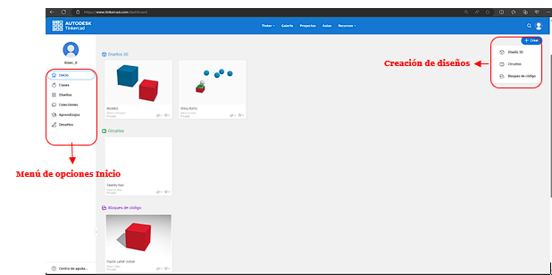

Una vez que hayas creado tu cuenta en Tinkercad, verás una interfaz dividida en varias partes. Para entender mejor cómo luce, observa la siguiente ilustración:

Menú de Opciones
- Inicio: Es la página principal de la aplicación. Aquí puedes acceder a los tres módulos de Tinkercad:
- Diseños 3D: Para crear y editar modelos en tres dimensiones.
- Circuitos: Para diseñar y simular circuitos electrónicos.
- Bloques de Código: Para programar y automatizar tus diseños.
- Clases: Aquí verás las clases en las que estás inscrito, si estás participando en alguna.
- Diseños: Muestra todos los diseños que has creado y guardado.
- Aprendizajes: Accede a tutoriales y guías para mejorar tus habilidades en Tinkercad.
- Desafíos: Encuentra retos y proyectos para poner a prueba tus habilidades y aprender nuevas técnicas.
Creación de Diseño
- Crear: Esta opción te permite comenzar a crear un nuevo diseño desde cero.